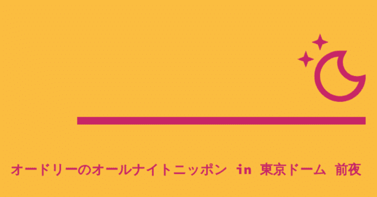

この記事が投稿されているだろう2024年2月17日。
何の変哲もないように見えるが、僕にはちょっとした意味を持つ日付だ。それもそう、今日は『オードリーのオールナイトニッポン』 in 東京ドームが開催される前日なのである。
思い返せば、「オードリーが東京ドームでライブをする」という一報を耳にした昨年の春。
最初その知らせを聞いた時はとても驚き、そして言い表し難い嬉しさが込み上げた。そして、かつて本人たちが「今は第三次オードリーブームだから」「ついに第四次オードリーブームがきますね」などと冗談交じりに話していたが、まさにそのブームの連続が東京ドームライブの開催に結実したわけだから、思わず感慨深くもなった。
以前投稿した下記記事にも東京ドームライブが決定した際の当時の想いを書かせてもらっている。
そこにも同じ内容が記されているが、過去に単独でお笑い芸人が東京ドームでライブをしたのは1989年のとんねるずだけ。一世を風靡した偉大な先輩の後に、実に35年の時を経て彼らが同じ舞台に上がるなんて……長年応援しているファンとしては非常に誇らしい気持ちになる。
https://note.com/kaito0589/n/ne525f0b6b409
そもそも、今回の東京ドームライブは『オードリーのオールナイトニッポン』放送開始15周年を記念したものだ。
ちなみに2019年に行われた10周年ライブの会場は日本武道館。チケットの先行抽選販売と一般販売が即完売の大盛況であったため、通常はあまり開放することのないバックスタンド席も急遽設けてステージ上を客席が360度囲む形にしたほどだった。
ここで少し個人的な話をすると、前回の10周年の時はちょうど僕が本番組を聴き始めたくらいのタイミング。もちろん武道館でライブをすることは知っていたが、チケット獲得のため自ら応募するほどの熱量は当時まだ育っていなかったわけである。
しかし、今回は違う。
武道館ライブが終わってからというもの、一度たりとも聴き逃すことなく最新回まで全放送を聴いてきた身にとって、「東京ドームで生のオードリーを見るんだ！」という熱は最高潮に達していた。
そして、自身でライブチケットに応募すること自体初めての経験だったが、「どうか当たりますように！」と願いを込めながら、このたび申込をしてみたのである。
東京ドームは約4万5千人という大人数を収容できるキャパシティのため、実のところ「この人数なら、きっと当たるだろう」と見積もっていたわけだが、どうやらその時の僕は彼らの人気ぶりを見誤っていたようだ。
1次から4次までのチケット販売受付枠にすべて応募するものの落選続き(これは後日判明したが、約19万の応募があったらしい。そりゃ当たらんわけだ)。その後に始まった、各映画館で行われるライブビューイングのチケット受付にも申込をし、すがる思いで当落結果を待っていたら、そこでようやく当選を叶えることができた。
ライブチケットが手に入らなかったことは残念だったが、今回改めてオードリーのオールナイトニッポンリスナー(通称:リトルトゥース)の多さを再確認できた。場所さえ違うものの、せっかく同じ日時に彼らのライブを味わえる機会を得られたのだから、明日は存分に楽しみたいと思う。
そもそも、彼らがラジオ業界の中でも伝統あるオールナイトニッポンのパーソナリティに抜擢されたのが2009年10月。
前年のM-1グランプリで敗者復活戦を勝ち上がり準優勝を果たした彼らは、まさに飛ぶ鳥を落とす勢いの活躍ぶり。そんな流れもあってか、ほどなくしてオールナイトニッポンの土曜パーソナリティに。今ではニッポン放送全体の聴取率でも上位に入る人気番組になっている。
思えば、若林結婚のサプライズ発表も、入籍直前に浮気報道が世に出た春日への禊も、全部この番組だった。
これまで本番組で数々のトークを聴いてきたが、その節々に番組愛を感じたり、地上波テレビでは話せないような私生活や仕事観なども赤裸々に語ってきてくれた。二人の素を知れるオールナイトニッポンは、まさにホームそのものだといってもいい。
普段から鈍臭くてスタイリッシュさのかけらもないこの僕でも、今ではこなれたリスナーよろしく、生活の一部として複数のラジオ番組を聴く習慣が出来上がっているが、そんな僕が初めて日常的にラジオを聴き始めたのが『オードリーのオールナイトニッポン』だった。
そのような経緯もあってか、本番組ではおなじみの、オープニングトークを約40分も喋ったり、トーク中にリスナーからのお便りをほとんど読まないというスタイルは他番組ではあまり見かけないことも、この番組以外を実際に聴いてみるまでは実感が湧かなかった。
ある意味定石通りではない番組構成ながらも、彼らのおかげでラジオの面白さに気づけた身としては、この番組に対する思い入れはこれからもずっと変わらない。そして、それは各々のリトルトゥースにとっても、ほかでは替えの利かないラジオ番組だからこそ、あの東京ドームを満員にするほどの集客になったのだと思う。
そんな、いわば同士たちと同じ夜を分かち合える場が今回用意されていることは、この上なく幸せなことなのかもしれない。きっと明日は特別な一日になるだろうから、その一瞬一瞬をこの目に焼き付けておきたい。
「東京ドームへの道」と題してYouTubeでライブ準備の様子や、スタッフたちとこれまで積み重ねてきた想いを語る動画を数多く投稿したり、毎週土曜のオールナイトニッポン放送回でも関連コーナーで常に最新情報を届けてくれたこともあってか、イチファンとしては東京ドームライブ参加に向けてかなり体が温まってきた状態である。
ほかのリトルトゥース同様、オードリーの二人をはじめ本番組に関わるすべてのスタッフに祝福と感謝の想いを抱えながら、明日の今頃はどんなトークで笑っているのだろうと今からワクワクしている。
「ニチレイプレゼンツ！オードリーのオールナイトニッポン！」の挨拶まで、もう少しだ。